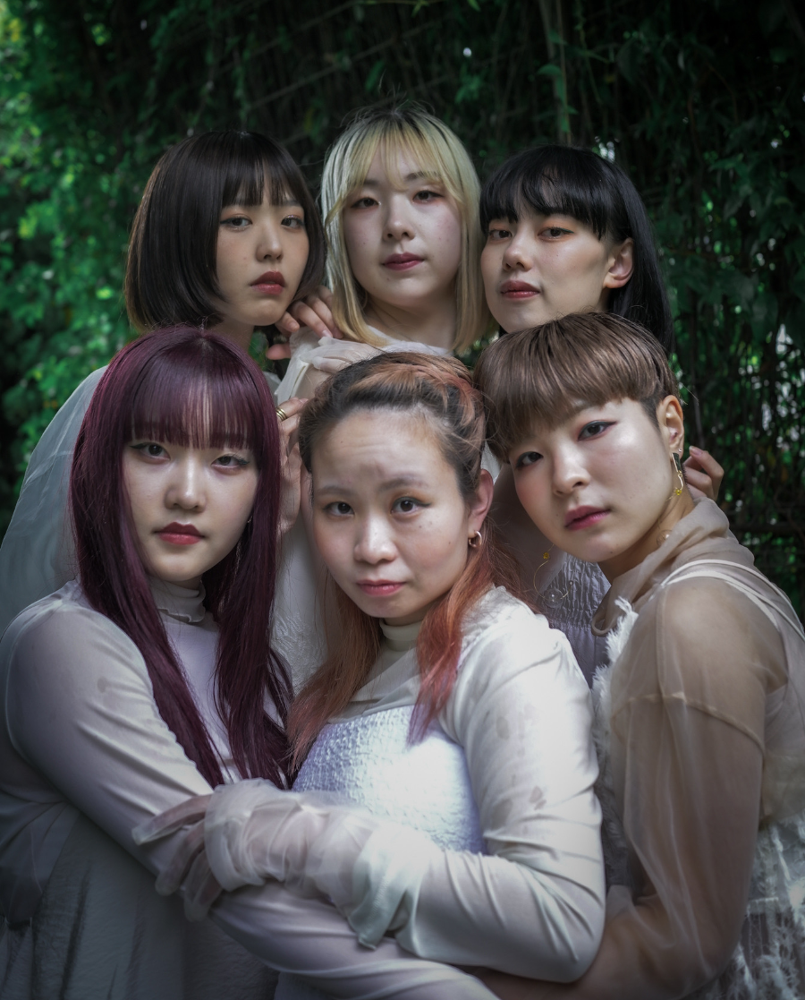

ストーリー
先輩に紹介された、怪しさマックスの高日給バイト。
連れていかれた山荘で雇い主に依頼されたのは、裏庭にいる”ワニ”の計測だった。
身の危険を感じ先輩を問い詰めるが、返ってきたのは思わぬ言葉。
「大丈夫、ワニはいない」
どうやら雇い主の妄言に付き合うのが仕事らしい。
でも話してみて、とても妄言を吐く異常者とは思えない。
「私は、本当にワニの計測をしてほしいんだ」
先輩には見えない。
雇い主には見える。
何が本当で、誰が正常なのか。
あなたには、裏庭のワニが見える？
先輩に紹介された、怪しさマックスの高日給バイト。連れていかれた山荘で雇い主に依頼されたのは、裏庭にいる”ワニ”の計測だった。
身の危険を感じ先輩を問い詰めるが、返ってきたのは思わぬ言葉。「大丈夫、ワニはいない」どうやら雇い主の妄言に付き合うのが仕事らしい。
でも話してみて、とても妄言を吐く異常者とは思えない。「私は、本当にワニの計測をしてほしいんだ」
先輩には見えない。雇い主には見える。何が本当で、誰が正常なのか。
あなたには、裏庭のワニが見える？
キャスト
本公演はA・B・C・Dの４チームにわかれて上演いたします
Aチーム
徳永伸光
岩永光祐
千田悠月
Bチーム
安岡哲太
長嶺一世
大場麗央奈
Cチーム
浜田雅貴
Maho
竹内歌穂
Dチーム (英語上演)
浜田雅貴
Maho
Kennedy
ダンサー
| A : | 竹内歌穂 | × | 田島さつき |
| B : | 中村日和 | × | 陳内希海 |
| C・D : | 守屋のあ | × | 夢 |
振付
中村日和
ミュージック
歌
Masa
演奏
らっきょ
朗読
モカ
作詞・作曲
かんたろう
編曲
Petty Owl
スタッフ
| 演出： | モカ |
| 脚本： | 村山和弥 |
| 音楽監督： | Petty Owl |
| 照明プラン： | 川口旅史 |
| 美術・衣装： | 福島佳寿子 |
| 英訳： | Maho モカ |
| 広報： | 杉浦亮太郎 |
| 演出助手・照明： | 江波戸理奈 |
| 当日運営： | 田村光 (演劇ユニットスターチス) |
| 舞台写真： | 板場俊 |
| フライヤー撮影： | 河井優花 |
| 動画撮影・編集： | 杉浦亮太郎 安岡哲太 モカ |
| 協力： | 熊谷宏彰 |
| 企画・制作： | 梅とうぐいす |
スケジュール
2024年9月13日(金)～9月16日(祝月)
| 9/13(Fri) | 14:00- B | 17:00- C | 20:00- A |
| 9/14(Sat) | 16:00- B | 19:00- D | |
| 9/15(Sun) | 14:00- A | 17:00- D | 20:00- B |
| 9/16(Mon) | 14:00- C | 18:00- A |
本公演では舞台稽古の公開を実施いたします
公開稽古：2,500円
公開稽古のチケットはこちらチケット
一般前売：4,500円／一般当日：5,000円
U-23：3,500円
ご観劇日に23歳以下の方限定のチケットです(要身分証)
特等席：5,500円
１列目を確約するチケットです(数量限定/席の指定は出来ません)
応援チケット：6,500円
座席列指定＋1,500円ご指定の出演者に還元されるチケットです
リピート：3,000円
公開稽古来場者限定(上演台本付)：3,000円
公演のチケットはこちらスペシャル
2024/7/8 ティザー映像公開！
2024/8/1 クラウドファンディング開始！

2024/8/28 クラウドファンディング目標金額達成！
2024/9/16 全公演無事終演！

2024/9/27 クラファン終了＆目標金額200%達成！
2024/9/30 スペシャルサンクス公開！
クラウドファンディングでご支援いただいた皆さまへ出演者、スタッフ一同心より感謝申し上げます
スペシャルサンクス
uyamuya様 テイクファイブ様 めぐみく様 ファンの一人様 らみさんのファン様 からあげクン様 Toppy様 中村良平様 オサカナアクセル企画様 ソラ様 岩永 みか様 のぶ様 あやぽん様 ゆきちゃん様 田中 由季子様 田島由紀様 佐々井明日香様 佐々井美希様 リリコイ様 YUKA様 ひつじ様 篠原 佑友様 ヨシオカヒロム様 ともっち先輩様 冷凍みかん大好きっ子様 植野尚孝様 KAHO様 おはし様 すぎ様 宇津 恵美子様 mahoの旦那（予定）様 澤野 祐哉様 浜田真弓様 タムタム様 けん様 徳永 結子様 メテオ様 佳音様 山根健史様 ささみ様 せき様 丸山徹様 hanna様 かずてぃん！様 劇団印象-indian elephant-様 莉 頚鵠（blue.moon.blue）様 雨宮みき様 sayuri3様 さかもと様 じょに様 Rick.a様 fumi様 Takahiro Hamada様 千田めぐみ様 きき様 りょうま様 Masaki様 ぺこ様 KIKUCHI様 熊谷宏彰様 椎名門様 cinnamon様 荻野 紗那様 もぐ様 りく様 かない様 ひさぴー様 むぎ様 國崎史人様 横室彩紀様 サムシング太郎様 テイク５様 黒様 匿名でご支援いただいた皆様